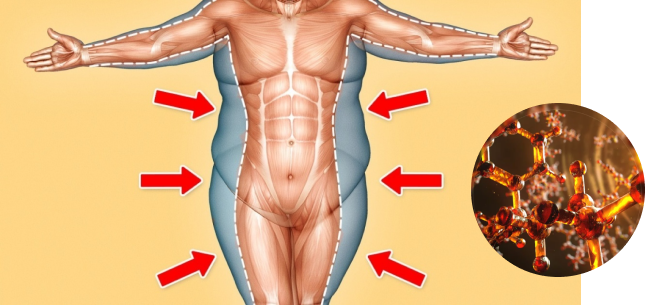

BURN MT - για όσους δεν θέλουν τα περιττά κιλά

Το συμπλήρωμα για την απώλεια βάρους θα το χρειαστούν όλοι. Αυτό αντικαθιστά τα χάπια και τη σκόνη και τις σταγόνες, είναι ένα συμπληρώμα διατροφής που καίει πραγματικά το λίπος - τι προτείνετε? Πώς να επιλέξετε ένα συμπλήρωμα διατροφής με το οποίο θα χάσετε τα περιττά κιλά, αλλά και δεν θα βλάψετε τον οργανισμό μας?
Καινοτομία νέας γενιάς
Παρουσιάζουμε το νέο συμπλήρωμα BURN MT , που καίει τα λίπη αποτελεσματικά και τονώνει το σώμα με τον σωστό τρόπο. Πρόσφατα εμφανίστηκε στην αγορά συμπλήρωμα για την απώλεια βάρους, BURN MT έχει ήδη αποδεδεικτεί η αποτελεσματική δράση του

Μεταξύ παρόμοιων προϊόντα αδυνατίσματος BURN MT συγκρίνεται ευνοϊκά με ορισμένα πλεονεκτήματα:
- καμία παρενέργεια
- δείχνει εξαιρετικά αποτελέσματα.
- είναι ένα νέο επίπεδο προϊόντος.
Κατά την εφεύρεση του BURN MT οι επιστήμονες παρατήρησαν ότι ορισμένα συστατικά, όταν συνδυάζονται με τις σωστές αναλογίες, όχι μόνο μπορούν να κάψουν τα ενεργά λίπη, αλλά και να βοηθήσουν στην αποτροπή της συσσώρευσης του υπερβολικού λίπους στις προβληματικές περιοχές. Αυτή η ποιότητα του BURN MT δοκιμάστηκε και τα αποτελέσματα ήταν πολύ εντυπωσιακά.
Εδώ μιλάει ο Μανώλης Βασιλειάδης, αθλητικός διατροφολόγος για το νέο συμπλήρωμα διατροφής:

« BURN MT είναι ένα εξαιρετικό συμπλήρωμα για όσους θέλουν να διατηρήσουν το σώμα τους σε εξαιρετική κατάσταση. Αυτό είναι ένα απαραίτητο προϊόν για όσους θέλουν να χάσουν κιλά. BURN MT - ένα συμπλήρωμα νέας γενιάς που δεν είναι εθιστικό, δίνει μια τονωτική επίδραση στο σώμα και καίει ομοιόμορφα το λίπος.
Συμπλήρωμα ταχείας δράσης έχει παρενέργειες όπως η γρήγορη επιστροφή βάρους εφόσον σταματήσετε απότομα την πρόσληψη του συμπληρώματος. Το συμπλήρωμα BURN MT , χάρη στη σύγχρονη φόρμουλα, δρα στον οργανισμό αργά, ομοιόμορφα και αποτελεσματικά. Μετά τη λήψη αυτού του συμπληρώματος τα περιττά κιλά δεν θα τα ξαναπάρετε. ».
Μοναδική φόρμουλα
Τα αμινοξέα και άλλα στοιχεία εμπεριέχονται στο BURN MT Σε τέτοιες περιπτώσεις, το συμπλήρωμα έχει θετική επίδραση στο κυκλοφορικό σύστημα του σώματος:
- συμβάλλει ενεργά στο μεταβολισμό
- βελτιώνει τον μεταβολισμό
- εμπλουτίζει το κυκλοφορικό σύστημα με βασικά ιχνοστοιχεία και θρεπτικά συστατικά.
- ενεργοποιεί τη λεμφική αποστράγγιση.
Όλες αυτές οι μοναδικές ιδιότητες στο συγκρότημα δημιουργούν τη φυσική διαδικασία απώλειας βάρους. Σημαντικό: Λόγω των μικροβιολογικών του ιδιοτήτων, το BURN MT διεισδύει στα πιο δύσκολα σημεία συσσώρευσης λίπους και προάγει τη διάσπασή τους.
Δεν υπάρχει εθιστικότητα
Οι περισσότεροι άνθρωποι που θέλουν να χάσουν βάρος φοβούνται να πάρουν φαρμακευτικά και διατροφικά συμπληρώματα για έναν λόγο: φοβούνται μήπως συνηθίσουν και εξαρτηθούν από τη διά βίου χρήση.
Το συμπλήρωμα BURN MT δεν περιέχει διεγερτικά, και δεν υπάρχει εθιστικότητα
Η απουσία αρωμάτων,, βαφών, γλυκαντικών στο BURN MT επιτρέπει σε άτομα με χρόνιες ασθένειες: διαβήτη, υπέρταση και αλλεργικές αντιδράσεις να λάβουν αυτό το συμπλήρωμα.
Το νέο συμπλήρωμα έχει αποδειχθεί σε κλινικές δοκιμές. Οι εθελοντές που έλαβαν το BURN MT σε για δοκιμή σημείωσαν όχι μόνο έχασαν γρήγορα τα κιλά αλλά μετά τη λήψη αυτού του συμληρώματος, τα επιπλέον κιλά δεν ξαναεπέστρεψαν. Σε αυτήν την περίπτωση, τα άτομα δεν παρουσίασαν παρενέργειες, περιπτώσεις αλλεργιών ή δυσανεξίας.
Το συμπλήρωμα BURN MT είναι ένα μέσο για την απώλεια βάρους μιας νέας γενιάς, αποτελεσματικό και ασφαλές.
Για ποιούς συνιστάται το BURN MT
Αυτό το συμπλήρωμα έχει περάσει όλες τις απαραίτητες κλινικές δοκιμές και τεστ, έχει πιστοποιητικά ποιότητας που απαιτούνται από το νόμο. BURN MT Οι κατασκευαστές του BURN MT αρνήθηκαν να χρησιμοποιήσουν διεγερτικά το συμπλήρωμα, το οποίο δεν είναι εθιστικό. Επιπλέον, σάς επιτρέπει να χρησιμοποιείτε αυτό το προϊόν τη νύχτα - κατά τη διάρκεια αυτής της περιόδου το BURN MT δρα πιο ενεργά λόγω της ειδικής μοριακής φόρμουλας. Το BURN MT δρα ενεργά. Για την δική σας ευκολία το BURN MT παρασκευάζεται με τη μορφή αθλητικής διατροφής. Για μια συγκεκριμένη εργασία που αντιμετωπίζει ένα άτομο, η δοσολογία και η διάρκεια του BURN MT μπορεί να είναι διαφορετικές και επιλέγονται ανάλογα με τα χαρακτηριστικά του οργανσμού.
 Φωτογραφία: Αναστασία Βέγγου, ένας από τους πρώτους αγοραστές του Fortunella
Φωτογραφία: Αναστασία Βέγγου, ένας από τους πρώτους αγοραστές του Fortunella Το BURN MT συνιστάται:
- σε αθλητές που παρακολουθούν το βάρος τους.
- σε αυτούς που προπονιούνται στα γυμναστήρια - σε συνδυασμό με τη σωματική δραστηριότητα Το BURN MT δίνει ένα εξαιρετικό αποτέλεσμα
- σε όλους, όσους παρακολουθούν το βάρος τους και ελέγχουν την διατροφή τους και την δίαιτα που κανουν.
Δεν υπάρχουν παρενέργειες
Η μοναδικότητα του BURN MT είναι στο ότι δεν έχει παρενέργειες. Το συμπλήρωμα:
- δεν προκαλεί αισθήματα υπνηλίας και κόπωσης
- είναι υποαλλεργικό, δεν προκαλεί ερεθισμό του δέρματος και εξανθήματα.
- ρυθμίζει το πεπτικό σύστημα, δεν ερεθίζει τα έντερα.
- μπορεί να καταναλωθεί με οποιοδήποτε είδος τροφής.
- δεν απαιτεί τη διακοπή του αλκοόλ.
Λεπτομερείς οδηγίες

Πώς να εφαρμόσετε το BURN MT, στις οδηγίες αναγράφονται λεπτομερώς. Η δοσολογία εξαρτάται από:
1. Το βάρος ενός ατόμου.
2. Τον βαθμός της σωματικής του δραστηριότητας
3. Το τρόπο ζωής και διατροφή
4. Η παρουσία ή απουσία των χρόνιων παθήσεων.
Το συμπλήρωμα μπορεί να ληφθεί με τη ρητή μέθοδο, όταν πρέπει να χάσετε βάρος σε σύντομο χρονικό διάστημα ή να καθυστερίσετε την πρόσληψή του για μεγαλύτερο χρονικό διάστημα.
Σε κάθε περίπτωση, για το πως θα το λαμβάνετε το αναγράφουν οι οδηγίες.
Νέος βοηθός για δίαιτες
Ο καθένας θα μπορέσει να χάσει το περιττό βάρος με το συμπλήρωμα BURN MT Γιατί να περιορίσετε τον εαυτό σας στα τρόφιμα και να σταματήσετε να τρώτε τα αγαπημένα σας φαγητά? Το BURN MT σας επιτρέπει να μην αλλάξετε τον συνηθισμένο τρόπο ζωής σας. Αλλά να είστε βέβαιοι - μέσα σε μια εβδομάδα μετά τη λήψη αυτού του εξαιρετικού συμπληρώματος, θα παρατηρήσετε ότι οι μερίδες σας έχουν λιγοστέψει. Σε τελική ανάλυση το BURN MT περιέχει χρήσιμα μικροστοιχεία και αμινοξέα απαραίτητα για τον οργανισμό.
Σημαντικό: Η διαδικασία της απώλειας βάρους είναι αρκετά περίπλοκη. Το κύριο πράγμα εδώ είναι να μην επιβαρύνετε τα ζωτικά όργανα και, στη συνέχεια, να μην ξαναπάρετε τα κιλά που χάσατε. Το συμπλήρωμα Fortunella αντιμετωπίζει αυτόν τον στόχο: δεν επιβαρύνει τον οργανισμό και το αποτέλεσμα που θα έχετε θα διατηρηθεί για πολλά χρόνια. Είστε έτοιμοι να το δοκιμάσετε? Κάντε κλικ εδώ - εδώ είναι όλες οι λεπτομέρειες σχετικά με τη χημική σύνθεση του BURN MT, για το πως εφαρμόζεται, κριτικές και τα χαρακτηριστικά του.
Τα περιττά κιλά δεν θα τα ξαναπάρετε.
Και εδώ μιλάνε οι πραγματικοί χρήστες, όσοι έχουν ολοκληρώσει την πλήρη θεραπεία του BURN MT.
Ο Πέτρος Γιαννακόπουλος, είναι επικεφαλής μιας σχολής χορού, και έκανε τη θεραπεία για τρεις μήνες με το BURN MT:

«Είχα απαραίτητη άδεια έξι μηνών στη δουλειά μου, κατά τη διάρκεια αυτής της περιόδου πήρα επιπλέον βάρος και ήταν απαραίτητο να επαναφέρω γρήγορα την σιλουέτα μου. Ένας φίλος μου συνέστησε το BURN MT. Μελέτησα τις οδηγίες, συνειδητοποίησα ότι δεν θα είχα παρενέργειες και αποφάσισα να το δοκιμάσω. Μέσα σε μια εβδομάδα, όχι μόνο έχασα μερικά κιλά, αλλά επίσης παρατήρησα ότι είχα γίνει πιο ενεργητικός. Αλλά το σημαντικό δεν είναι ότι έχασα τα περιττά κιλά γρήγορα αλλά ότι δεν μπορώ να τα ξαναπάρω τόσο εύκολα. Πλέον δεν παίρνω άλλο το συμπλήρωμα BURN MT εδώ και τέσσερις μήνες και το βάρος μου διατηρείται στο επίπεδο που ήθελα να επιτύχω. Θέλω επίσης να σημειώσω ότι δεν παρατηρήθηκαν παρενέργειες, δεν ένιωθα κάποιο βάρος, δίψα, κόπωση κατά τη χορήγηση του συμπληρώματος. Αντιθέτως, βίωσα ένα κύμα δύναμης, βελτιωμένη διάθεση, άνεση. Το σημαντικό είναι ότι έχασα περίπου 12 κιλά, ενώ το δέρμα δεν ζάρωσε καθόλου. Σημαντικό: κατά τη διάρκεια της εφαρμογής του BURN MT μπορείτε να μην αλλάζετε τη διατροφή σας. Φυσικά, συνιστάται να απομακρύνετε τα λιπαρά τρόφιμα και να περιορίσετε τον εαυτό σας στα γλυκά και στα κουλούρια."
Καμία δυσκολία με το BURN MT η Blogger Μάρα Σαμαρτζή μετά τη χρήση αυτού του συμπληρώματος άφησε μια τέτοια κριτική:
«Υπέφερα από το γεγονός ότι« ξαφνικά »η μέση έγινε πιο φαρδιά, τα χέρια μου αδύναμα, και οι γοφοί μου ξαφνικά έγιναν πιο στογγυλοί. Ναι, και τα αγαπημένα μου τζιν πλέον μου ήταν μικρά. Έψαχνα διάφορα βιβλία και ξαφνικά βρήκα το συμπλήρωμα BURN MT. Διάβασα τα πάντα για το συμπλήρωμα ότι μπορούσα να βρώ στο ίντερνετ, και αποφάσισα να το δοκιμάσω μόνη μου. Ο κύριος παράγοντας υπέρ αυτής της απόφασης ήταν οι πληροφορίες ότι αυτό το συμπλήρωμα δεν έχει σχεδόν καμία παρενέργεια. Έτσι, την πρώτη ημέρα λήψης του BURN MT έχει ωραία γεύση είναι σε σκόνη, χωρίς αρωματικά και γλυκαντικά. Δεν είχα κάποιες διαταραχές το στομάχι μου. Αποδείχθηκε ότι οι φόβοι ήταν μάταιοι - για ολόκληρη την περίοδο της λήψης του BURN MT δεν είχα κανένα απολύτως πρόβλημα και ο οργανισμός μου επανήρφε στην φυσιολογική του κατάσταση. Μου φάνηκε ότι μόλις πήρα την πρώτη δόση του συμπληρώματος BURN MT τα λιποκύτταρα άρχισαν να αυτοκαταστρέφονται. Φυσικά, καταλαβαίνω ότι αυτό είναι καθαρά ψυχολογικό. Και μιλώντας αντικειμενικά, την πρώτη εβδομάδα έχασα 2,5 κιλά. Λίγοι θα το πουν αυτό! Μην πιστεύετε σε αυτά τα συμπληρωματικά που σας υπόσχονται ότι σε μια εβδομάδα θα χάσετε 3 ή περισσότερα κιλά. Είναι πολύ ανθυγιεινό για τον οργανισμό. Αλλά το BURN MT Он είναι ένα χρήσιμο και αξιόπιστο συμπλήρωμα. Κάνει αργεί καύση του λίπους και σας βοηθάει να μην ξαναπάρετε τα περιττά κιλά που ήδη χάσατε με το που ολοκληρώσετε την θεραπεία του συμπληρώματος. "
Κριτικές

Χριστίνα, 42 ετών
Όλη μου τη ζωή βασανιζόμουν με το υπερβολικό βάρος και δεν μπορούσα να αδυνατίσω με κανέναν τρόπο, και στη συνέχεια αποδείχθηκε ότι είχα ακριβώς το πρόβλημα που περιγράφεται στο άρθρο. Το συμπλήρωμα βοηθά πραγματικά, μετά τη θεραπεία έχασα 12 κιλά!

Αλεξάνδρα, 36 ετών
Σίγουρα! Τώρα αυτή η ανακάλυψη θα είναι σε κάθε είδηση. Λοιπόν αυτή τη φορά, τουλάχιστον βρήκα ένα εξαιρετικό συμπλήρωμα.

Δέσποινα, 31 ετών
Εμένα μου φαίνεται ότι είναι μια απάτη ... τίποτα δεν είναι σαφές ...
Πέτρος, 31 ετών
Δεν χρειάζεται να καταλάβετε τίποτα. Αρκεί να γνωρίζετε μόνο ένα πράγμα: ότι το Fortunella λειτουργεί πραγματικά. Το έλεγξα μόνος μου και τώρα δεν έχω προβλήματα, ενώ πριν δεν μπορούσα να κουνηθώ.

Μαρία, 47 ετών
Το καλοκαίρι δεν φορούσα ανοιχτά ρούχα, γιατί ντρεπόμουν την σιλουέτα μου. Μετά την θεραπεία του συμπληρώματος BURN MT δεν ντρεπομουν καθόλου. Κοιτάξτε απλώς το αποτέλεσμα. Τώρα είμαι 4 φορές μικρότερη και όλα αυτά χωρίς δίαιτες και προπόνησεις.


Ελένη, 47 ετών
Η διατήρηση του βάρους μετά τα 40 γίνεται πιο δύσκολη, μόλις επιτρέψτε στον εαυτό σας ένα επιπλέον γλυκό, αυτό ήταν, πήρατε ένα επιπλέον κιλό στους γοφούς σας. Αποδείχθηκε ότι το πρόβλημα είναι μόνο στην αντίσταση της ινσουλίνης. Έπινα το συμπλήρωμα BURN MT, τώρα έχω το ίδιο βάρος μετά από 30 χρόνια!

Μαρία, 29 ετών
Πριν την λήψη του συμπληρώματος με το BURN MT έχανα σταδιακά βάρος μέσα σε 10 χρόνια. Αλλά μάταια! Προσπάθησα ακόμη και να αγαπήσω τον εαυτό μου για αυτό που είμαι, αλλά δεν τα κατάφερα. Ήθελα να φορέσω 44 μέγεθος. Και το όνειρό μου έγινε πραγματικότητα: τώρα ζυγίζω 52 κιλά.:)

Σοφία, 32 ετών
Με τη βοήθεια του BURN MT ανέκτησα το σχήμα που είχα πριν από τη γέννηση του παιδιού μου! Το βάρος έφυγε γρήγορα και χωρίς προβλήματα.
Γωγώ, 55 ετών
Γειά σας! Πρόσφατα παρήγγειλα το BURN MT , και σε μόλις μια εβδομάδα έχασα ήδη 5 κιλά!! Στην ηλικία μου αυτό είναι πολύ δύσκολο να επιτευχθεί και είμαι πολύ ικανοποιημένη με τα αποτελέσματα. Συνεχίζω να χάνω βάρος με χαρά!

Δόμνα, 30 ετών
Πολύ ενδιαφέρον άρθρο! Τώρα που ξέρω πώς λειτουργεί το BURN MT , δεν είναι τρομακτικό για την υγεία μου, σίγουρα θα το παραγγείλω

Αλίκη, 29 ετών
Γεια σε όλους! Ζύγιζα 80 κιλά, αλλά τώρα το βάρος μου είναι 55 κιλά και κατάφερα να το κάνω μόνο με το BURN MT ! Το αποτέλεσμα διατηρείται για ένα μήνα, χωρίς αλλαγές στο βάρος σας. Αυτό είναι πραγματικά ένα πολύ καλό συμπλήρωμα!

Αγγελική, 41 ετών
Κάπνισα για 10 χρόνια. Μόλις κατάφερα να ξεπεράσω τον εθισμό στη νικοτίνη, άρχισα να παίρνω κιλά ☹ Το BURN MT μου το παρήγγειλε η αδερφή μου, η ίδια έχασε κιλά με αυτό το συμπλήρωμα μετά την εγκυμοσύνη. Στην πραγματικότητα, η όρεξη μειώνεται μετά την πρώτη δόση. Επέστρεψα στο ιδανικό μου βάρος, και ταυτόχρονα όχι μόνο δεν έβλαψα τον εαυτό μου, αλλά έχω επίσης πολλή ενέργεια κατά τη διάρκεια της ημέρας!